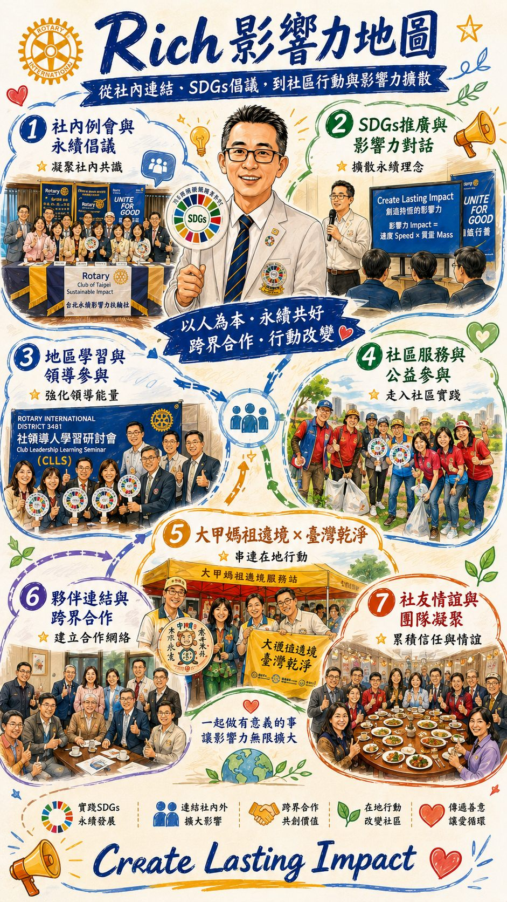

In the founding history of the Club, there was a little-known turning point.
At its founding, a candidate for the next President had already been arranged. Yet in the first year, the original President-Elect left the club, and afterward CP Impact consulted several members, but for various practical reasons the candidate to take up the second term as President could not be confirmed.
The President's seat was empty.
It was an extremely sensitive moment. The newly founded club was not yet stable, its systems were still being built, and if the successor was not steady, the gears might lose momentum.
Rich was invited under such circumstances. Having been a member for less than half a year, Rich was not yet familiar with Rotary club affairs. Rotary knowledge, operating processes, regulations, and culture were all still being explored.
"Yes."
This "yes" was courage.
Most people wait until they are ready to take on responsibility. Rich, however, took it on before becoming familiar.
He had no Rotary family background, nor years of club experience. But he had one thing: a high degree of identification with the direction of the Club, and trust in CP Impact.
He did not take the role because he "wanted to be President," but because "this club is worth being led steadily forward."
After taking over, he did not operate by feel. He did three things:
In a short time he filled his knowledge structure. This was not formal participation, but genuine commitment to learning. Members observed that he attended nearly every seminar, and would extend his questioning afterward to confirm his understanding.
From an organizational governance perspective, Rich's taking responsibility was deeply significant. After several successive changes of candidate, another delay would have been a heavy blow to the new club's morale.
His taking over was itself a signal of stability. It conveyed:
This belongs to the core of G (Governance).
Rich did not originally come from a health or medical background, but he valued health, and thirteen years ago resolutely decided to make promoting health management his mission.
He is not a doctor, not a dietitian, nor a graduate of a related field. Yet his concepts and insights on health management have at times surprised doctors.
At first, some medical professionals held a reserved attitude toward his ideas, and even questioned his methods. But as time and the results of practice emerged, these doubts gradually turned into agreement.
This is an important breakthrough. Because it means that cross-disciplinary professional dialogue produced integration.
He does not challenge the medical profession, but supplements another way of thinking about health management.
True impact often occurs when:
"Those who originally disagreed begin to change their views."
This is a deep transformation. Rich's health philosophy broke through not because he persuaded a certain number of people, but because he used real results to make professionals reconsider.
This kind of impact belongs to S (the social dimension). It is not loud, but it is solid.
Observing Rich's qualities, several key points can be seen:
These qualities make him a "learning-oriented leader." In an organization like the Club, centered on sustainability and dialogue, this style is especially important. He is not a forceful reformer, but a steady, growth-oriented type.
Looking closely, one finds he shares common ground between his health philosophy and club governance:
Health is not curing illness, but long-term management.
A club is not events, but long-term operation.
Both require structure, discipline, a long-term perspective, and behavior change. This is also why he fits naturally with the direction of the Club.
The development of the Club has not been a straight line. Personnel changes, role shifts, and institution-building all take time.
Rich's emergence was a pivotal turning point. He represents a kind of signal:
Even when not yet fully ready, one can still choose to move forward.
This attitude is itself sustainability.
Rich's story is not an ornate resume.
It is: when everyone hesitated, he said "yes." When not yet familiar, he went to learn. Amid voices of doubt, he kept doing.
The gears of the Club can keep turning not because of the perfect candidate,
but because of the person willing to take responsibility.
Rich is that person.